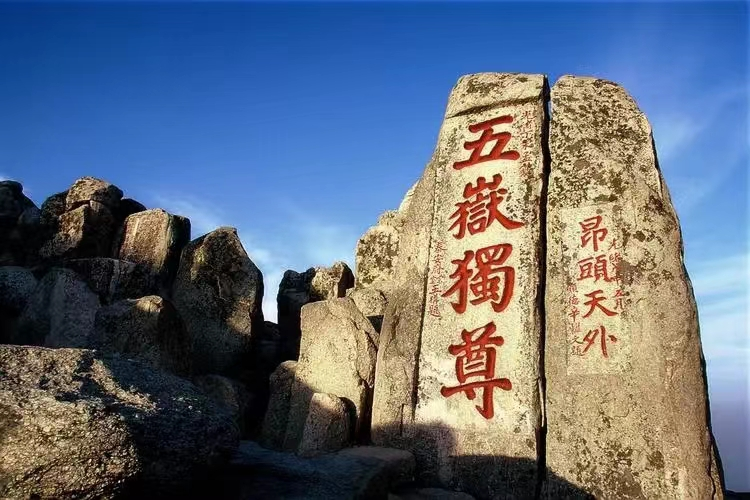
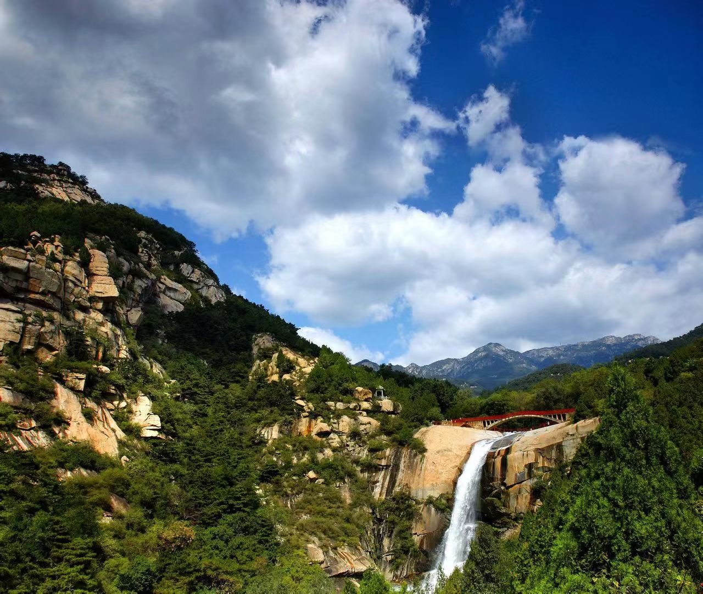

泰安是中国优秀旅游城市和国家历史文化名城，山东旅游“一山一水一圣人”旅游热线的中点。 境内的泰山为“五岳之首”“天下第一山”，1987年被联合国教科文组织列为世界自然与文化遗产。
泰安因泰山而得名，“泰山安则四海皆安”，寓国泰民安之意，城区位于泰山脚下，依山而建，山城一体。 境内的泰山是国家重点风景名胜区，有“五岳之首”、“天下第一山”的美誉，是世界自然与文化遗产。
位于山东省中部，北依山东省省会济南； 南临儒家文化创始人孔子故里曲阜； 东连商城临沂；西濒黄河。

泰安是山东省地级市，全市总面积为7762平方公里。 截至2020年9月11日，全市下辖6个县市区、4个功能区。 泰安市属于温带大陆性半湿润季风气候区，四季分明，寒暑适宜，光温同步，雨热同季。 春季干燥多风，夏季炎热多雨，秋季晴和气爽，冬季寒冷少雪。 截至2020年11月1日零时，泰安市常住人口为5472217人。
在新构造运动的影响下， 泰山的侵蚀切割作用十分强烈， 广泛发育不同类型的侵蚀地貌。 由于泰山南坡年升量远比北坡大， 南坡的侵蚀强度相对比较强，侵蚀地貌也相对比较发育， 形成众多的深沟峡谷、悬崖峭壁， 造就了泰山南坡陡峻险奇的地貌景观，如舍身崖、十八盘、 扇子崖等处的险峻地形。 区内河流呈放射状分布于泰山的周围， 大部分南流汇入大汶河，雨季常形成山区洪流， 携带大量砂砾堆积在谷口处， 组成洪积扇群， 形成山前冲洪积台地。
Copyright ? 2018-2020 Huayubaike.Com Inc. All rights reserved. 泰安风景网 版权所有